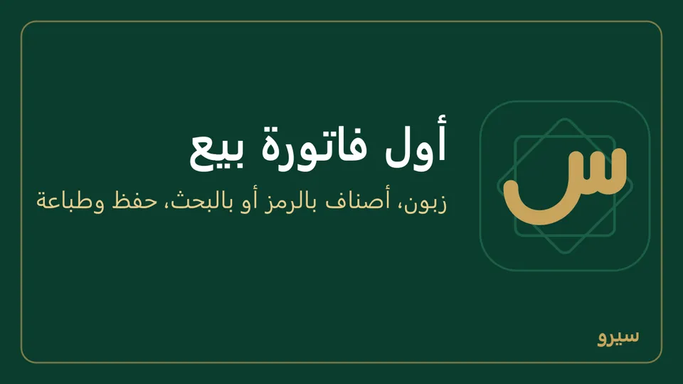

فاتورة بيع
- من المبيعات اختر فاتورة بيع جديدة، أو اضغط Ctrl + K واكتب «فاتورة بيع».
الشاشة كالفاتورة الورقية: في الأعلى ثلاثة أعمدة مختصرة، كل خانة واسمها بجانبها (التاريخ والاستحقاق وطريقة الدفع | الإجمالي بخط كبير والتسعيرة والزبون | العملة وسعر الصرف وخصم)، ثم جدول الأسطر مرقّماً بعرض الشاشة كلها، ثم المندوب والملاحظة، وفي الأسفل المجموع (والصافي بعد الخصم) وزر حفظ. فاتورة الشراء بالترتيب نفسه. نافذة جديدة بجانب العنوان يفتح فاتورة ثانية في نافذة وحدها، فيها الفاتورة فقط بلا القائمة الجانبية، تحرّكها وتكبّرها وتصغّرها وتنزلها إلى شريط المهام وتغلقها، وافتح منها ما شئت، وتبقى الأولى كما هي.
- الفاتورة لا تضيع قبل الحفظ: ما تكتبه يُحفظ على هذا الجهاز أولاً بأول. اذهب إلى ملخص اليوم أو نقطة البيع ثم ارجع إلى فاتورة بيع جديدة فتجدها كما تركتها، حتى بعد إغلاق البرنامج. تُحذف من هنا حين تحفظها.
- أكثر من فاتورة مفتوحة: فوق الفاتورة تظهر الفواتير غير المحفوظة، كل واحدة باسم زبونها وعدد أسطرها ومجموعها. زبون تأخّر؟ اضغط + فاتورة أخرى وخدّم الذي بعده، ثم اضغط على فاتورة الأول فتكمل منها. علامة × تغلق فاتورة دون حفظ (يسأل قبل حذف أسطرها).
- الزبون: اتركه فارغاً (نقدي) لبيع مدفوع الآن، أو اكتب أول اسمه واختره من القائمة التي تظهر. زبون ليس في القائمة؟ اكتب اسمه كاملاً فيظهر تحته «ليس في القائمة: يُضاف زبوناً جديداً عند الحفظ» (لمن له صلاحية العملاء). مع زبون اختر طريقة الدفع (تبدأ بما اختاره المحل في بداية الفاتورة الجديدة): على الحساب تُسجَّل ديناً عليه، ونقدي قبضت ثمنها الآن ويبقى اسمه عليها، أو شام كاش أو غيرها من طرق الدفع فتدخل الفاتورة كلها حسابها. دفع جزءاً منها أو أكثر منها؟ اكتب ما قبضته في المدفوع الآن: الأقل يبقى باقيه على حسابه. الأكثر يسألك تحتها عن الزيادة: رجّعتها له باقياً (أعطاك ورقة أكبر وأرجعت له الفرق، فلا يُسجَّل إلا ثمن الفاتورة)، أو تبقى بحسابه (دفعة على حسابه) فتسدّد فواتيره المفتوحة الأقدم أولاً ثم تبقى له. لا تُحفظ الفاتورة حتى تختار. فارغة = قبضت الفاتورة كلها. زيادة سُجّلت على حسابه خطأً؟ ألغِ سندها «زيادة على INV-…» (كيف)، والفاتورة تبقى مدفوعة. على الجوال: رجّعتها باقي أو تبقى بحسابه. فاتورة بالدولار: اكتبه بالدولار؛ مجموعها كما يظهر يدفعها كلها بلا قرش باقٍ، والزيادة تسدّد فواتيره بالدولار بسعر صرف هذه الفاتورة. فاتورة تنتظر الموافقة تأخذ في المدفوع الآن حتى مبلغها فقط: سجّل الزيادة سند قبض بعد الموافقة.
- في كل سطر اكتب الرمز (رمز الصنف أو باركوده) أو اكتب في الصنف أي جزء من اسمه أو رمزه (مثل «charger» أو «800») فتظهر قائمة بكل ما يطابقه مع رمزه وما بقي منه وسعره بـالتسعيرة المختارة، فتقارن نسخ القطعة الواحدة (أصلي، تجاري، صيني) قبل أن تختار. اكتب رقم القطعة في اسم كل نسخة أو رمزها لتظهر كلها معاً. القائمة تمتد حتى أسفل الشاشة فتقارن عشرات الأصناف وأسعارها معاً (اكتب «بطارية» فتظهر كل البطاريات). الاسم الطويل يظهر كاملاً في السطر على أكثر من سطر، فاكتب الوصف في اسم الصنف نفسه: «بطارية ليثيوم فيليستي FLA 200 mAh». الأصناف التي تبدأ كلماتها بما كتبت تأتي أولاً: «ر س» يضع «روست ساندويتش» قبل كل اسم فيه راء وسين في وسطه. اختر بالأسهم وEnter أو بالنقر، فينتقل المؤشر إلى الكمية، ثم الكمية؛ السعر يُملأ وحده من التسعيرة. Enter ينقلك من الرمز إلى الكمية إلى السعر ثم إلى سطر جديد، ومن رمز فارغ إلى الصنف لتكتب اسمه، ولا يحفظ الفاتورة، وShift + Enter يرجعك خانة. السهمان ↑ و↓ في الرمز أو الكمية أو السعر ينقلانك إلى الخانة نفسها في السطر الذي فوقه أو تحته، فتعدّل أسعار الأسطر أو كمياتها واحداً تحت الآخر. + سطر يضيف سطراً أيضاً، و× في آخر السطر يحذفه (وفي السطر الوحيد يفرّغه). السطر الجديد يبدأ بلا صنف (اختر الصنف…)، وما بقي منه فارغاً لا يُحفظ. رمز لا يطابق صنفاً يُبقي السطر بلا صنف مع «لا صنف بهذا الرمز»، ولا تُحفظ الفاتورة حتى تصحّحه أو تختار الصنف.
- استعلام عن مادة (أو F2) تحت الأسطر يفتح نافذة بكل الأصناف: اكتب الحروف أو الكلمات الأولى من الاسم فتضيق القائمة مع كل كلمة. هذا بحث بالأحرف الأولى من كل كلمة: «ر ص» يجد «روست ساندويتش»، لأن كل حرف أو كلمة تكتبها تطابق أول كلمة من كلمات الاسم، بأي ترتيب، ثم تأتي الأسماء التي فيها ما كتبته في وسط كلمة. خانة الصنف في السطر وعلى الجوال تبحث كذلك. حدّد أكثر من صنف بـCtrl + نقرة (أو Space)، ثم Enter أو أضف إلى الفاتورة فتنزل كلها أسطراً بكمية 1 وسعرها. النقر المزدوج يضيف صنفاً واحداً فوراً. ما يظهر بجانب كل صنف (الموجود، سعر البيع بالليرة أو بالدولار، قوائم الأسعار، آخر سعر شراء، التكلفة) يختاره المالك: كيف.
- اضغط حفظ (أو Ctrl + Enter). Enter وحده في أي خانة، الزبون وخصم والمدفوع الآن وملاحظة، ينقلك إلى الخانة التالية ولا يحفظ. تاريخ بعد اليوم يُقبل (شيك مؤجل) مع تنبيه تحته، فتنتبه لشهر مكتوب خطأً. تُفتح الفاتورة وفيها طباعة.
- حفظ وطباعة (أو Ctrl + P) بجانب حفظ: تُحفظ الفاتورة وتذهب إلى الطابعة، والشاشة صارت على فاتورة جديدة فارغة للزبون التالي، وفوقها «حُفظت الفاتورة وأُرسلت إلى الطابعة» مع افتحها إن احتجتها. اختر الطابعة في نافذة ويندوز للطباعة كالعادة. - إن رُفض الحفظ (سقف الدين، تاريخ خارج السنة، دفعة ناقصة…) يظهر السبب فوق حفظ ويبقى كل ما كتبته: صحّح واحفظ مرة أخرى.

- سعر الجملة أو المفرّق بدل سعر المستهلك: اختره من التسعيرة فتتبدّل أسعار كل الأسطر (كيف).
- السعر يُعدَّل يدوياً إلا إن منع المالك دورك من تعديل أسعار البيع (كيف): يبقى عندها سعر المستوى المختار، ويرفض البرنامج الحفظ بسعر آخر.
- تعرف إجمالي السطر لا سعر القطعة؟ اكتبه في خانة الإجمالي بجانب السعر: 90 قطعة بإجمالي 100 يصير سعرها 100 ÷ 90 وحده، ويبقى الإجمالي 100 كما كتبته. وفاتورة الشراء كذلك.
- المطلوب في أعلى الفاتورة وفي شريط الحفظ هو ما سيُدفع فعلاً، بعد الخصم والعرض الترويجي والضريبة ورصيد بطاقة الهدية؛ وتحته المجموع وما أُخذ منه. خصم أكبر من مجموع الأسطر يُرفض.
- القيد تحت الأسطر: ما سيُسجَّل في الحسابات عند الحفظ (مدين، دائن، رمز الحساب واسمه)، بعملة الدفاتر. يتبدّل مع كل تغيير، ويحسبه البرنامج بطريقة الحفظ نفسها دون أن يحفظ شيئاً. إن كان الحفظ سيُرفض تظهر هنا السبب مسبقاً. على الجوال اضغط عرض بجانب القيد.
- رصيد الزبون وما بقي من الصنف وأنت تكتب: تحت الزبون يظهر رصيده فور اختياره، «عليه 5,000» أو «له 2,000» أو «لا رصيد»، وفي قائمة الأسماء بجانب كل اسم. ومع أول صنف يظهر بجانبه «رصيده بعد الفاتورة: عليه 12,000»: رصيده القديم مع هذه الفاتورة وما دفعه فيها، يتغيّر مع كل صنف تضيفه أو تحذفه، فتقول للزبون شقد صار عليه دون الخروج من الفاتورة. الرصيد بعملة الدفاتر، وفاتورة بالدولار تدخله بسعرها. وتحت كل صنف «عندك 720 قطعة · 2 كرتونة»: ما بقي منه في المستودع بوحدته، وبأكبر وحداته إن كان له وحدات، وبجانب كل صنف في قائمة الأصناف. فاتورة الشراء وعروض الأسعار والطلبات كذلك، وفي السندات والعمليات اليومية ونقطة البيع يظهر الرصيد بجانب الاسم. على الجوال يظهر الرصيد بجانب اسم الزبون أو المورد بعد اختياره، وتحته «رصيده بعد الفاتورة» مع أول صنف، وسعر الصنف وما بقي منه تحت اسمه في قائمة أضف صنفاً.
- زبون له سقف ائتمان: بجانب رصيده «السقف 500,000 · المتاح 120,000»، ويصير بالأحمر إن كانت فاتورة على الحساب ستتجاوزه، فتعرف قبل الحفظ أنها ستُرفض.
- آخر سعر بعته لهذا الزبون: حين تختار زبوناً يظهر تحت سعر كل صنف بعته له من قبل «آخر سعر بعته له 27,000»، فلا تبحث في فواتيره القديمة (على الجوال في سطر الصنف). وإن فعّل المالك اقترح آخر سعر بعته لهذا الزبون من بداية الفاتورة الجديدة يبدأ السعر به أيضاً.
- الزبائن بترتيب خط المسير: إن فعّل المالك رتّب الزبائن حسب خط المسير من بداية الفاتورة الجديدة ينزل الزبون الذي بعته للتو إلى آخر قائمة الزبائن، فيبقى التالي على خطك في أعلاها. بعد جولة واحدة تتبع القائمة ترتيب خطك وحدها، وزبون لم تبعه بعد يبقى في أعلاها. على الجوال كذلك.
- رصيده بعد الحفظ: صفحة الفاتورة المحفوظة تقول تحت اسم الزبون أو المورد رصيده الآن، بعد هذه الفاتورة وما دفعه فيها، أو «لا رصيد عليه ولا له»؛ اضغطه لكشف حسابه. على الجوال في رأس الفاتورة.
- كمية أكثر مما في المستودع: يظهر تحت الكمية «المتوفر 3 فقط» بالأحمر، أو «غير موجود في المستودع» إن لم يبقَ منه شيء. يمكنك الحفظ مع ذلك، ويصير رصيد الصنف بالسالب حتى تُسجَّل فاتورة الشراء. مندوب السيارة لا يبيع أكثر مما في سيارته.
- محل له أكثر من مستودع: المستودع بجانب التاريخ في أعلى الفاتورة: منه تخرج بضاعتها (وإليه تدخل في فاتورة الشراء)، وما بقي من كل صنف يُقرأ منه. يبدأ بمستودع هذا الجهاز، وتعديل الفاتورة يمكن أن ينقلها إلى مستودع آخر. على الجوال فوق تفاصيل أخرى. مستودع واحد؟ لا تظهر الخانة.
- تحت سعر كل سطر التكلفة: متوسط ما كلّفك الصنف، بعملة الفاتورة ووحدة السطر، فتعرف قبل الحفظ إن كان السعر يربح. إن كان السعر دونها تظهر بالأحمر «أقل من التكلفة». على الجوال تظهر في سطر الصنف نفسه. لا يراها دور أخفى عنه المالك «التكلفة والربح» من الحقول الحساسة (الحقول الحساسة).
- قائمة المبيعات: خانة بحث تجد الفاتورة برقمها (INV-12 أو 12) أو باسم الزبون، ومن وإلى لفترة، وفي أسفلها السابق والتالي للصفحات الأقدم.
- صفحة كل مستند تعرض في أسفلها السجل: من أنشأه وأرسله للموافقة ووافق أو رفض وعدّل وألغى، ومتى، وبأي سبب. والفاتورة الملغاة أو المرفوضة أو التي تنتظر الموافقة يُطبع عليها ذلك بخط عريض، وكذلك السند الملغى.
- وأنت تكتب فاتورة البيع يظهر في أسفلها ربح الفاتورة ويتغيّر مع كل سطر (على الجوال تحت الإجمالي)، فربح كبير جداً أو خسارة يعني غالباً سعراً أو كمية خطأ: صحّحها قبل الحفظ. وبعد الحفظ يبقى تحت الفاتورة: مجموعها بعد الخصم ناقص تكلفة ما خرج من المستودع، بالليرة، وبالدولار أيضاً إن كانت الفاتورة بالدولار (بسعر صرفها)، وبجانبه التكلفة. باعت دون التكلفة؟ يصير خسارة الفاتورة بالأحمر. المرتجع لا يغيّره لأنه مستند وحده؛ ربح الفترة كلها في التقارير. على الجوال يظهر تحت مجموع الفاتورة المحفوظة. لا يراه دور أخفى عنه المالك «التكلفة والربح».
على الجوال: زبون جديد؟ اضغط + بجانب الزبون واكتب اسمه ثم إضافة، فيُضاف ويُختار دون أن تترك الفاتورة. فوق الفاتورة اختر نقدي أو آجل أو شام كاش وغيرها من طرق الدفع، ومع زبون اكتب المدفوع الآن إن دفع جزءاً أو أكثر، بلا نقطة بين الآلاف (1500000 أو 1,500,000): رقم لا يُقرأ مثل 1.500.000 يُرفض ولا يُحسب صفراً. الإجمالي هو ما سيُدفع فعلاً، بالضريبة والعروض الترويجية وبطاقة الهدية، وتحته ما أُضيف أو أُخذ («ضريبة … · العروض …»). زبون أو صنف ليس في القائمة؟ اكتب اسمه في بحث الزبون أو أضف صنفاً واضغط إضافة، فيُضاف دون الخروج من الفاتورة (الصنف باسمه وسعر بيعه). لكتابة إجمالي سطر بدل سعره اضغط على السطر واكتب إجمالي السطر فيُحسب السعر منه. تفاصيل أخرى أسفل الفاتورة فيها التاريخ والاستحقاق وملاحظة ومركز الربحية والمشروع والمندوب كما على الكمبيوتر. البحث لا يفرّق بين أ وا ولا بين ة وه. صورة الصنف (إن صوّرته من الأصناف) تظهر بجانب اسمه وسعره في قائمة أضف صنفاً وفي سطره بالفاتورة، كما في بيع بالكاميرا، فيعرفه من يبيع بالصورة. حفظ وطباعة بجانب حفظ الفاتورة يحفظها ويفتح نافذة الطباعة فوراً، والفاتورة صارت فارغة للزبون التالي. رسالة الحفظ تقول رقم الفاتورة ومبلغها وحالتها (مدفوعة أو غير مدفوعة أو مدفوعة جزئياً). اخترت آجل بلا زبون؟ يظهر «البيع الآجل يحتاج زبوناً» فوق الحفظ قبل أن تضغطه. بعد حفظ الفاتورة اختر مشاركة PDF لترسلها على واتساب بشعار المحل وعنوانه وهواتفه، أو طباعة على طابعة واي فاي، أو نص (كيف).